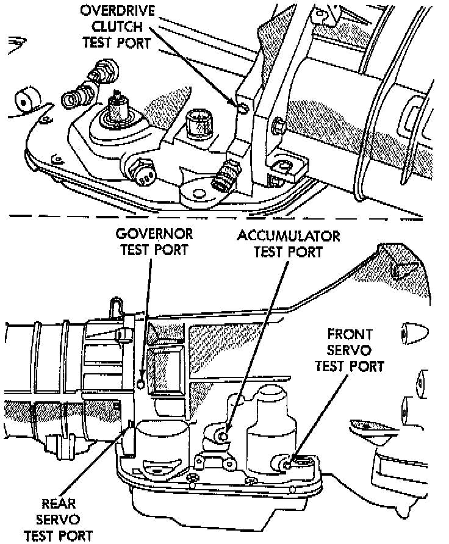

General Information
NOTE:- Hydraulic test pressures range from a low of one psi (6.895 kPa) governor pressure, to 300 psi (2068 kPa) at the rear servo pressure port in reverse.
- An accurate tachometer and pressure test gauges are required. Test Gauge C-3292, or equivalent has a 100 psi range and is used at the accumulator, governor, and front servo ports. Test Gauge C-3293-SP, or equivalent has a 300 psi range and is used at the rear servo and overdrive ports where pressures exceed 100 psi.

PRESSURE TEST PORT LOCATIONS
Test ports are located at both sides of the transmission case.
Line pressure is checked at the accumulator port on the right side of the case. The front servo pressure port is at the right side of the case just behind the filler tube opening.
The rear servo and governor pressure ports are at the right rear of the transmission case. The overdrive clutch pressure port is at the left rear of the case.